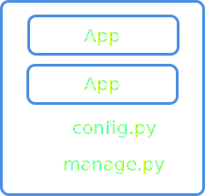

Welcome
version: 0.1.6
Stairs is a framework which allows you to slice and dice and make sense of your data.
It allows you to build data pipelines on top of streaming/queues services. And make parallel, async, real-time or distributed calculations for most of your data related tasks in a very simple and fast way.
Stairs available for Python3, but you can write data processors in any language. You can also use any of streaming services which you want.
It's easy to start, test all your ideas or hypotheses in a quick way and it is ready for immediate use without any special magic.
It's faster and more scalable than "Ray project", "Luigi" or "Airflow". More about performance.
Start from Installation and then get an overview with Get started.
Links:
Stairs on github.
Stairs examples.
Why Stairs? Stairs internals.
Why we have data pipelines today?
Installation
# install redis https://redis.io/topics/quickstart
# sudo apt-get install redis
# brew install redis
pip install stairs-project
It's recommended to use the latest python 3 version.
Just make pip install stairs-project to install stairs along with all
python dependencies.
Stairs requires Redis for storing statistics and certain meta-information, even if you use a different streaming or queue service.
Mission
Data Pipelines
The main Stairs focus is data pipelines. It's a framework which helps you to build and manipulate data through the chain of functions connected using streaming or queues services.
You can think of it as of an MVP framework (like Django) for data pipelines. Different layers of abstractions and components allow you to build any kind of data flow graphs and easily understand what's going on in your system.
Data pipelines is not only about ETL, you can also use Stairs for:
- Training neural networks
- Data analytics
- Parsing and scrapping data
- Real-Time Web applications
Why/How ETL able ot solve a wide range of tasks
Stairs examples.
Parallel/Async/Distributed
Each data pipeline component can be represented as a separate python process (worker). Each component communicate with each other using streaming/queues services and together they can process your data in a parallel way.
Right now Stairs is using:
- Redis queues
- RMQ
- SQS
You can easily connect new Streaming/Queue service as described here:
The Stairs framework focuses on speed and light, and the speed of your "workers" is limited mostly by your streaming/queues service.
Also internally Stairs has a strong inter-process communication service which allows you to send hundreds of thousands messages per sec between two processes.
For data-science and data-engineering with love
Data-science and data-engineering are growing fast, and it's hard to be an expert in everything at the same time.
For example, to train ML models, you should spend about 80% of your time to process data -- your fast ability to process data and test all hypotheses will influence your final result.
Stairs allows a data-scientist to build "scalable" solutions without a high level of data-engineering skills.
- A data-scientist will focus only on data processing
- A data-engineer will focus only on deploying part
Getting started
# script-like example as an alternative to default stairs project,
# you can copy-paste it and simply execute.
from stairs import PipelineInfo, DataPoint, DataFrame
from stairs import StairsProject, App
# Init Stairs project
project = StairsProject()
# Register Stairs App
app = App('core')
project.add_app(app)
@app.pipeline()
def main_pipeline(pipeline: PipelineInfo, data_point: DataPoint) -> DataFrame:
# pipeline which defines how functions will be connected and
# executed
return (data_point
.rename(value=data_point)
.subscribe_func(calculate_fibonacci)
.subscribe_consumer(print_fib))
@app.producer(main_pipeline)
def generate_data():
# Producer which forward data to `main_pipeline`.
for i in range(20):
yield dict(data_point=i)
@app.consumer()
def print_fib(value, result):
# consumer which working independently from pipeline
print("Fibonacci for value %s, is: %s" % (value, result))
def calculate_fibonacci(value):
# function which calculates fibonacci value
if value == 0:
return dict(result=0)
elif value == 1:
return dict(result=1)
return dict(
result=calculate_fibonacci(value - 1)['result'] +
calculate_fibonacci(value - 2)['result']
)
if __name__ == "__main__":
# compile pipeline, and connect all functions together.
main_pipeline.compile()
# produce data to `main pipeline` using streaming service
generate_data()
# run pipelines, and consume data from streaming service
project.run_pipelines([main_pipeline], die_when_empty=True)
In this section you will find how to run your first Stairs data pipeline and will get a very quick overview of Stairs components. This section covers Stairs functionality very superficially, and if you need full description of Stairs components skip this part.
When you are done with installation, let's try to kick-start your first Stairs project.
For this you need to type following command in shell:
stairs-admin project:new name
This command will generate default Stars project structure, where you will
find following components:
- core - package which represents "core" stairs app, with pipelines/consumer/producers components inside.
- config.py - where all Stairs related configuration live.
- manage.py - controller of Stairs project. It allows you to control
stairs components using shell commands.
Inside core package you will find:
- app_config.py - which defines Stairs App object.
- pipelines.py - place where Stairs "Pipelines" functions lives. This
functions are constructing data pipelines (as a chain/graph of functions).
- producers.py - place where Stairs "Producers" functions lives.
This functions will read data from data source, and forward everything to pipelines.
- consumers.py - place where Stairs "Consumers" functions lives. This
functions are able to save/export data to the global (e.g. database)
- flows.py - place where you can find functions which were defined in
pipelines. Exactly these functions are working with data.
Note: all communication between stairs components happens using
Mappinglike object (for example dict).
In Stairs everything starts from producer. To move data from producer to
pipeline you need to run producer function using shell command:
python manage.py producer:run generate_data
This command will generate 20 items and forward them to streaming/queue service
(redis by default).
Then, you can run pipelines, simply call:
python manage.py pipelines:run
This command will ask Stairs pipelines to consume data from streaming services
and forward it to defined functions. In the end of pipeline it will be
delivered to consumer and printed to console.
You can run multiple processes to start pipelines:
python manage.py pipelines:run -p 10
This command will run 10 independent processes which will handle data from
producer.
Now you can scale and improve producer/pipeline/consumer functions in the way you want. If you want to use whole super power of Stairs, checkout next chapters where you will find full description of Stairs components.
Also checkout Stairs examples.
Stairs Project
stairs-admin project:new name

StairsProject instance is the main control component in stairs. It's stores configuration, apps, and db connections. It allows you to run app components and get access to different parts of the system.
Stairs project consist of a set of Apps. Stairs apps were invited for extensibility and flexibility, similar to Flask/Django philosophy. Each stairs app has several components which represents data pipelines and ETL concepts.
To create a default project template, just use the following command:
stairs-admin project:new name
This command will generate a basic project structure with one app inside, called
core. To control Apps and other components you can use cli service, which
running by default in manage.py. It's similar to django, and it's allows you to
run producer or pipelines in one simple command.
By default StairsProject initialized in "manage.py" and reads settings from "config.py"
manage.py - it's a entry point to control everything inside stairs project.
It allows you to read a config, detect apps and execute different commands.
config.py - allows you to define StairsProject settings and reassign
settings for your apps.
from stairs import StairsProject, App
project = StairsProject('config.py') # based on config file
project = StairsProject(redis_host='localhost', redis_port=6379)
project.add_app(App('core'))
project.get_app('core')
manage.py and config.py - it's a fast way to start your stairs project,
but you can always create your own StairsProject instance with all needed
settings and apps.
from stairs import get_project
my_project = get_project()
You can always get the instance of the Stairs project from any place. And you
will have unlimited access to all apps and it's components.
from stairs import signals
@signals.on_project_ready()
def init_database():
pass
Also as soon as Stairs project initialize and all components ready, it will
send a signal called on_project_ready. You can subscribe for it, as following:
Stairs App
stairs-admin app:new name

App collects all core components (pipelines, producers, consumers) in one place and enviroment.
One of the reason why Apps have a place in Stairs - it's a flexible customization and configuration. Stairs apps configuration allows you to integrate and reuse external apps in different projects.
Each app has the following core components:
- a pipeline - represents a chain of functions which process your data.
Each pipeline consists of multiple small components like custom functions or
Stairs Flow components.
- a producer - a function which helps you to read a source
(a file, a database ...) and then forward data to pipeline through streaming
service.
- a consumer - a function which writes data to the data store or changes "the global state".
from stairs import App
app = App(name="my_app")
To create a new "default app" template (with a packages and modules), type the following command:
stairs-admin app:new name
To define your app, you should initialize an App object with a name.
In "default" app template you can find this initialization in app_config.py.
But your are free to initialize Stairs App in any places you want.
@app.pipeline()
def my_pipeline(p): pass
@app.producer(my_pipeline)
def my_producer():
yield dict(msg="hello world")
If you want to add a new app to the project, populate
apps variable in the config file or use get_project().add_app(app)
You can add new components to your app simply wrapping your function by app.component decorator, for example:
As soon as app component initialized with a function or method, it will be registered inside App and store at App.components field.
app = App()
app_producers = app.components.producers
app_pipelines = app.components.pipelines
my_pipeline = app.components.pipelines.get("my_pipeline")
my_pipeline = app.get_pipeline("my_pipeline") # shortcuts
You can access all stairs components using app instance. It specially useful
when you want to control components manually. For example you can add data
to pipeline my_pipeline.add_job(dict(a=1)) or run pipeline
get_project().run_pipelines(my_pipeline).
It's very easy to do using shell python manage.py shell
app = App('core')
app.config = dict(path='/')
app.config.update(path='/main')
print(app.config.path)
App configuration is a simple dict like object. You can safely redefine or update it in any places. App settings useful to control pipelines building process or when you plan to include App to a different project and apply some customization there.
Stairs App sends a signals when it's ready or initialized. Example:
from stairs.signals import on_app_ready
@on_app_ready("app_name")
def init_smth(app):
pass
Signals:
- on_app_created - when app instances created
- on_app_ready - when all app compoenents compiled and ready to use
Basic app schema:

App components
Pipeline
@app.pipeline()
def my_pipeline(pipeline, value):
return value.subscribe_func(my_function_which_process_data, as_worker=True) \
.subscribe_flow(MySecondFlow())\
.subscribe_consumer(save_result)
The pipeline is a way to combine multiple objects (functions/classes/other pipelines) in one big graph. It's all about building a graph of handlers for process your data.
The way it works is a bit tricky, but it's quite simple to understand and use. The input of each pipeline can be any data you want, then you can subscribe more and more handlers to these data and create a graph which will describe how your data must be processed.
Each component of the pipeline can be a worker, which communicates with other components through a streaming/queue service. And it will be possible to run this components in separate processes.
python manage.py pipelines:run
python manage.py pipelines:run -p 10 # start 10 processes
python manage.py pipelines:run app_name.pipeline_name
# or
get_project().run_pipelines(my_pipeline)
To run a pipeline (and let data go through the components of the pipeline) you
can use manage.py command or run it directly from the project.
Process will start consuming data from streaming service and forward data
through defined chain of functions.
When you are running pipeline, it expects that data already in streaming service.
Therefore you should forward some data to pipeline (streaming service) here at
least four options to do that:
- Run the Stairs producers (producer component section for more details)
- Execute one pipeline from another
data.call_pipeline(my_pipeline) - Add data to pipeline manually
my_pipeline.add_job(data) - Add data to pipeline from none-python env/lang, using queue/streaming
service, just pull some jobs to
pipeline.get_queue_name()queue
Next section will describe internals of Stairs pipeline. And you will see, how
to build a complex graphs of functions, which are easy to undestand and use.
from stairs import concatenate
from .app_config import app
@app.pipeline
def short_pipeline(pipeline, value1, value2):
return (concatenate(data_point1=value1, data_point2=value2)
.subscribe_func(my_function)
.get("result_data_point")
.subscribe_func(my_function_2())
.rename(result='result_data_point'))
@app.pipeline()
def detailed_pipeline(pipeline, value1, value2):
# combing all values tougher
data_frame = concatenate(data_point1=value1, data_point2=value2)
#subscribe a function which will change data frame values
#and return new set of data (DataFrame)
my_flow_result = data_frame.subscribe_func(my_function)
# Extract particular value (DataPoint)
flow_data_point = my_flow_result.get("result_data_point")
# Subscribe a function and rename all at once
result = flow_data_point\
.subscribe_func(my_function_2)\
.rename(result='result_data_point')
return result
Manipulating data inside the pipeline
The input of the stairs pipeline is "mock" values called "DataPoint's". It's a representation of a future data which will be consumed (came) from streaming/queue service and forwarded inside pipeline (to functions which you defined).
"Real" data will be accessible only inside the functions and flows,
which you "subscribed" to the "DataPoint's". (you can NOT use "real" values
directly inside the pipeline builder (@app.pipeline())
- this function is just for building functions graph, not for data manipulations.
You can subscribe the DataPoint with some functions or a Flow components and the result of this subscription will be a new object called "DataFrame" (a kind of the dict representation of DataPoints {key:DataPoint} structure) - it represents the result of your data handler (function/flow) after execution.
Each component of data pipeline (subscribed functions) should always return
"Mapping" like object (e.g. python dict). The Mapping object is called "DataFrame"
inside stairs pipeline and you can subscribe any function to it. One value of this
dict called "DataPoint".
You can always extract DataPoints from DataFrames using get('value').
Now the most interesting part: if you want to combine multiple
DataPoints or DataFrames into one object, you can use
the
concatenate(value1=data_point, value2=data_point2)
function, which returns the DataFrame with defined arguments.
If you want to modify your DataFrame, you can use the rename(value=new_value)
method, and the result will be a new DataFrame.
As you can see, it's quite simple to define such complex architecture just with 6 code lines. And it's a bit similar to how we define Neural Networks using Keras.
@app.pipeline()
def my_pipeline(pipeline, value):
return value.subscribe_flow(MyFlow(), as_worker=True) \
.apply_flow(MySecondFlow())\
.subscribe_consumer(save_result)
How each pipeline component changes data.
The components (e.g. functions) of the pipeline are able to accumulate data or completely redefine it. As was mentioned before, result of each function should be "Mapping" like object (e.g. python dict) and during pipeline executing we basically manipulating by this "dicts" objects.
During pipeline execution result of the one function could be input for another. This dict like object changes after each function - we can update data, or completely redefine by result of the last function.
For this stairs has three definitions:
- subscribe_
- apply_
- call_
- to subscribe - to accumulate/update current data by result of the stairs
component (e.g. function)
- to apply - to completely redefine data based on the pipeline component result.
- to call - used to execute pipelines as a standalone components which not
influence to current data.

def custom_function(new_value):
return dict(new_value=new_value*2)
@app.pipeline()
def base_pipeline(pipeline, value):
return value\
.subscribe_func(lambda value: dict(new_value=value+1), name='plus_one')\
.subscribe_func(custom_function, as_worker=True)
Types of components which changes data.
You can subscribe any functions to your data. But Stairs has a lot more cool components, which allows you to process data in a very efficient way.
- functions - you can subscribe/apply regular functions to your Data, inside
pipeline
. - lambda functions - you can subscribe/apply lamda functions (it's quite important to set a name for 'lamda' function).
- function as a producer - you subscribe/apply functions which could yield data and be as a generators of the data inside pipeline.
- flow - it's a special Stairs object, which combine set of simple functions into one very high level representation (see more in next chapters).
- another pipeline - you can subscribe/apply another pipelines to current data.
Note: all these components must return the dict object. And all communication
between stairs components happens using Mapping like objects.
@app.pipeline()
def base_pipeline(pipeline, value):
return value.subscribe_flow(BaseFlow(**pipeline.config))
@app.pipeline()
def my_pipeline(pipeline, value):
return value.subscribe_pipeline(base_pipeline)\
.subscribe_consumer(save_result)
@app.pipeline()
def my_pipeline_with_config(pipeline, value):
config = dict(use_lower=True)
return value.subscribe_pipeline(base_pipeline, config=config)\
.subscribe_consumer(save_result)
Chain pipelines.
Each pipeline is a "worker" which consume data from streaming/queues services and forward it to defined functions inside.
You can chain multiple pipelines into one using three different options:
-.subscribe_pipeline(pipeline2) - it will copy all steps from "pipeline2"
to current pipeline and execute first step of this pipeline as a "worker",
result of this pipeline will update "current data". (!)It's not very performance
friendly operation.
-.apply_pipeline(pipeline2) - like a 'subscribe_pipeline' it will copy all
steps from "pipeline2" to current one, but will completely redefine
"current data" by result of new pipeline. It works much faster then
'subscribe_pipeline'
-.call_pipeline(pipeline2) - it will forward all data to "pipeline2" and
execute it completely isolated from current pipeline. Result of this method
don't update current data. It's a very fast operation, but not change data
in current pipeline.
@app.pipeline(config=dict(cleanup_function=base_cleanup_function))
def base_pipeline(pipeline, value):
return value.subscribe_func(pipeline.config.cleanup_function)
@app.pipeline()
def my_pipeline(pipeline, value):
return value.subscribe_pipeline(
base_pipeline,
config=dict(cleanup_function=lamda value: dict(value=value+1))
)
One of the core stairs pipelines feature is a scalable way to configure them.
The structure of the app and pipelines is quite friendly to configuration,
you can set new config values and then call a new pipeline.
value.subscribe_pipeline(base_pipeline, config=dict(path='/home'))
These values will be available inside base_pipeline as:
base_pipeline.config.get('path')
def custom_function(value):
return dict(new_value=new_value*2)
@app.pipeline()
def base_pipeline(pipeline, value):
return value\
.subscribe_func(custom_function)\
.add_value(file_path='/tmp/save_data.txt')\
.subscribe_consumer(save_to_file, as_worker=True)
Custom/constant values
It's possible to add extra values (with real data) into your pipeline components.
It is useful if you want to configure something with constant variables or use the pipeline config:
data.add_value(url=pipeline.config.get('url'))
Producer
Producer is a set of components for reading data from any source you want, and then forward this data to pipelines (through streaming services).
So far, we have four types of the producer components:
- a simple producer
- a batch producer - a way to read your data in batches safely
- a redirect producer - wrapp around simple_producer which allows to call
another pipelines
- a spark producer - a way to execute spark RDD graph and pass data to
pipelines
@app.producer(pipeline.my_pipeline)
def read_file():
with open(FILE_PATH, "w") as f:
for row in f:
yield dict(row=row)
Simple Producer
It's an iterator function which yields data to defined pipelines.
You can run this "producer" from the console:
python manage.py producer:run producer_name
or, simply call it: my_producer()
Then Stairs will iterate by data which were yield from producer and forward everything to pipeline (through streaming service)
Producer should always yield Mapping like object (e.g. dict).
from stairs import producer_signals
@app.producer(my_pipeline,
repeat_on_signal=producer_signals.on_pipeline_empty,
repeat_times=3)
def my_producer():
return dict()
It's also possible to auto-repeat producer based on different signals. You can specify producer signal (or write your own), and amount of times you would like to repeat producer. As soon as signal function will return "True", producer will start executing again. Its useful, for example, for training neural networks, when you need to send data multiple times.
@app.producer()
def read_batch(batch_id):
interval = (batch_id*BATCH_SIZE, (batch_id+1)*BATCH_SIZE)
cursor.execute("SELECT * FROM table where id>%s and id<%s" % interval)
for row in cursor:
yield row
@app.batch_producer(read_batch)
def read_database():
for i in range(AMOUNT_OF_ROWS / BATCH_SIZE):
yield dict(batch_id=i)
Batch Producer
It's a parallel/distributed way to read data in batches. This is a next level of simple producer.
Batch producer return/yields data (jobs) (which will be input for Producer), and then this data goes to the streaming service. In a separate process simple producer starts consuming those data and forward to pipeline.
The idea is to split your data into batches and read each batch independently. If the whole batch had read successfully, it goes to the pipeline (in case of redis queue with one transaction, in case of others - one by one).
To start batch producer, which will generate jobs for simple producer,
simply run:
python manage.py producer:run batch_producer_name
It will start pulling data to "simple producer". Then you should tell "simple
producer" to start consuming jobs from streaming queue:
python manage.py producer:run_jobs simple_producer_name
You can run multiple of this ^ processes and make batch reading more fast and parallel.
Similar to Simple Producer, you can specify "repeating" signals.
@app.producer(my_pipeline)
def my_producer():
for i in range(100):
yield dict(x=1)
@app.producer_redirect(based_on=my_producer, my_new_pipeline)
def my_producer_2(data):
return data
Redirect Producer
The way to execute some producer with a different set of pipelines.
It will simply run based_on producer, and forward result to current
function. Then it will forward result of this function to newly
defined pipelines.
Its a good way to customize input data for different pipelines, without rewriting or duplicating producers.
Spark Producer
from pyspark import SparkContext
from pyspark.sql import SparkSession
sc = SparkContext(appName="app")
@app.spark_producer(pipeline)
def read_json_files():
spark = SparkSession \
.builder\
.getOrCreate()
f = sc.textFile("test.row_json", 10)
df = spark.read.json(f)
return df
The Spark producer is a way to read your data using spark power and then pull everything to the Stairs pipelines.
Spark has powerful features to read data in fast parallel way and it could be helpful when you want to read big amount of data, filter it and process using Stairs pipelines.
In the background Stairs iterates over each partition, create connection to your queue/streaming service and add job one by one to a queue. Checkout internal implementation here
To run spark producer you should run following command:
python manage.py producer:run spark_producer_name
It will start executing Spark context and pull data to pipelines.
Consumer
@app.consumer()
def save_to_redis(**data):
redis.set(json.dumps(data))
@app.pipeline()
def aggregate_smth(pipeline, value):
return value.subscribe_consumer(save_to_redis)
The consumer is a set of components for writing/saving your data to any type of store or for changing the global state of your system.
You are free to write/save your data inside the inside pipeline functions, but the consumer is not only about saving. It is also a way to accumulate all data to one place and achive true fault tolerance.
Stairs has 3 types of consumers:
- @app.consumer() is a simple function which should not return any data.
It's useful for saving data to the data store.
- @app.standalone_consumer() is a function which can be called as a separate process.
It's useful for writing data to a file or for accumulating them inside one process.
- @app.consumer_iter() is a function which yields data from the pipeline.
It's useful when you want to train e.g. a neural network. It is plays role of
data generator/iterator.
@app.pipeline()
def my_pipeline(pipeline, value):
return value.subscribe_consumer(
my_consumer,
when=lambda value: value == "hello"
)
Cool feature:
You can specify "when" attribute for subscribe consumer inside pipeline, and
this consumer will be executed only if "when function" return True
Consumer do NOT apply any changes to the data, when you subscribe it to your data it will execute in the background without any influence to your pipeline data. It's also possible (and recommended) to run consumers as a "workers".
import json
f = open("file.txt", "w")
@app.standalone_consumer()
def write_to_file(**data):
f.write(json.dumps(data))
f.write("\n")
@app.pipeline()
def save_data(pipeline, value):
return value.subscribe_consumer(write_to_file)
Standalone Consumer
Standalone consumer is the same component as a "app.consumer", but it will be executed only in a separate process.
Function in pipeline (one process) -> Streaming service -> Standalone consumer(another process)
Standalone consumer is always "worker", and to start executing jobs you
need to run cli command:
python manage.py consumer:standalone app.write_to_file
or write_to_file.run_worker()
It is useful if you need to write or perform data inside one process only.
@app.consumer_iter()
def train_data(x, y):
return (x, y)
@app.pipeline()
def prepare_data_for_nn(pipeline, data):
return (data
.subscribe_func(prepare_for_nn)
.subscribe_consumer(train_data))
# in a separate process
if __name__ == "__main__":
keras.Model().fit_generator(train_data.iter())
Consumer Iter
It's a standalone consumer (similar to app.standalone_consumer) but,
it will yield all data back to the process which called consumer.iter() method.
The @app.consumer_iter() component allows you to read data directly from the
streaming/queue service. You can iterate data which was passed to consumer from
any place you want. Simply call my_consumer_iter.iter()
Flow
class MyFlow(Flow):
@step(None)
def first_step(self, value):
return dict(first_step_result=value)
@step(first_step)
def second_step(self, first_step_result):
return dict(second_step_result=first_step_result)
class MyFlow2(Flow):
@step(None)
def third_step(self, value, first_step_result, second_step_result):
# which actually means value * 3
return dict(flow_result=value+first_step_result+second_step_result)
@step(third_step)
def second_step(self, first_step_result):
return dict(second_step_result=first_step_result)
@step(second_step)
def first_step(self, value):
return dict(first_step_result=value)
The Flow is a high-level component which actually defines the data pipeline. And it's a "next level" over pipelines functions.
You can call "Flow" almost like a function, but inside, it will be able to
execute complex graphs of functions. data_frame.subscribe_flow(MyFlow)
The problem with data pipelines builders is that it's not quite easy to
change/redefine something, also, a great amount of functions
makes pipelines like a hell of dependencies (luigi is a good example of it).
To solve these problems, we have the FLOW component which can be used to:
- change/redefine/extend your pipeline easily (just use python inheritance)
- configure easily
- easily understand what's going on
- each Flow can be a worker - the Flow has steps which should be run inside
another worker
The Flow represents a data flow graph (in a class) as a chain of functions called "steps". You can connect these steps simply by defining the "next step" in the decorator:
@step(next_step, next_step ... )
The input for the next step is the output from the current. The result of each
step is accumulating, which means that from any low-level steps you will be
able to get values from high-level steps.
The last step in your graph should be defined with the next step set to None.
@step(None)
All steps are executed in one "worker" (process).
The structure of the Flow class was actually inspired by stepist
Next you will find, many cool features of "Flow" components, which will improve you experience with Stairs and data processing.
from stairs import FLow, step
class MyFlow(Flow):
def __call__(self):
result_for_2 = self.calculate_stats(value=2)
result_for_4 = self.start_from(self.calculate_stats, value=4)
return (result_for_2.validate_data.value +
result_for_4.validate_data.value)
@step(None)
def validate_data(self, value):
value = max(value, 100)
return dict(value=value)
@step(validate_data)
def calculate_stats(value):
return dict(value=value ** 2)
How to run/execute Flow component.
When you defined chain of steps, you will need to tell Stairs how to run this
chain, and what data to return back to the pipeline. For this you need to define
__call__ method.
Inside the __call__, you can execute any step from your flow.
Then the whole chain of steps will be executed, until step with (next_step=None)
self.mystep(**kwargs_for_highest_step)
or
self.start_from(self.mystep, **kwargs_for_highest_step)
During chain execution each step could potentially save intermediate results.
steps where next_step is None - always save data inside. All this intermediate
data will be store in the object which will be returned back to __call__,
after (for example) .start_from method. You can access it as following:
data = self.start_from(self.mystep, **kwargs_for_highest_step)
last_step_data = data.last_step
from stairs import FLow, step
class MyFlow(Flow):
def __call__(self, value):
result = self.start_from(first_step, value=value)
return {**result.first_step, **result.second_step}
@step(None)
def second_step(self, value):
return dict(power3=value ** 3)
@step(second_step, save_result=True)
def first_step(self, value):
return dict(power2=value ** 2)
Get intermediate result.
It's also possible to customize steps, which should return the data result back.
Just set the save_result flag to True.

from stairs import FLow, step
class MyFlow(Flow):
def __call__(self, value):
result = self.start_from(first_step, value=value)
return {**result.first_step, **result.second_step}
@step(None)
def second_step(self, value):
return dict(power3=value ** 3)
@step(second_step, save_result=True)
def first_step(self, value):
return dict(power2=value ** 2)
class MyFlow2(MyFlow):
@step(second_step, save_result=True)
def first_step(self, value):
return dict(power4=value ** 4)
# ------ pipelines
default_flow = dict(my_flow=MyFlow)
new_cool_flow = dict(my_flow=MyFlow2)
@app.pipeline(config=default_flow)
def base_pipeline(pipeline, value):
return value.subscribe_flow(pipeline.config.get("my_flow"))
@app.pipeline()
def new_cool_pipeline(pipeline, value):
return value.subscribe_pipeline(base_pipeline,
config=new_cool_flow)
Expand and Scale Flow component.
The one of the main benefit of the Stairs flow it's a scalable way to easily
change your data manipulation chain without losing consistency. No matter how
much hypotheses you have, you will always have a good picture of your data flow
graph.
In case of data science tasks it's useful when you want to test a
lot of hypotheses and you have a lot of different ways to solve a problem.
The flow is a class, which means that we can use inheritance to redefine the logic of certain steps. Then you can use newly created Flow in pipeline.

from stairs import FLow, step
class MyFlow(Flow):
def __call__(self, value):
result = self.start_from(first_step, value=value)
return {**result.first_step, **result.second_step}
@step(None)
def second_step(self, value):
return dict(power3=value ** 3)
@step(second_step, save_result=True)
def first_step(self, value):
return dict(power2=value ** 2)
class MyFlow2(MyFlow):
def __reconnect__(self):
self.second_step.set_next(self.third_step)
self.second_step.set(save_result=True)
@step(None)
def third_step(self, value):
return dict(power4=value ** 4)
Reconnect steps inside Flow.
The inheritance also allows you to reconnect certain steps and change the Flow structure.
It's possible to add a new step to the top, insert it in the middle or add the "save_result" flag.

class MyFlow(Flow):
@step(None)
def second_step_2(self):
pass
@step(None)
def second_step_1(self):
pass
@step(second_step_1, second_step_2):
def first_step(self):
# this step will be executed right after
# root1 and root2
# data from root1 and root2 will be merge into current step
pass
Complex graph with multiple branches
You can define multiple "next" steps, and this will allow you to build complex
branchy pipelines, like in the example below:

APP Config
# app_config.py
from stairs import App
app = App(name="myapp")
app.config = {"use_validation": False}
# pipelines.py
@app.pipeline()
def my_pipeline(pipeline, value):
result = value.subscribe_func(my_function)
if app.config.use_validation:
result.subscribe_flow(ValidationFLow())
return result
# another project
app.config.use_validation = True
It's a place where you can setup your app.
You can define any settings you want for your app, and then when you introduce your app to the new project, those settings could be easily overwritten. This customization allows you to support project extensibility on a very high level, like it implemented in Flask or Django frameworks.
Examples
ETL example: hacker news
The idea here is to extract data from a certain source (in this case it's google cloud), to change them somehow and save them in a elegant format (for example, for creating charts later or for building neural networks).
You can start exploring this project from producers.py
inside the hacker_new app.
Each producer will send data to the pipelines, in our case we have two of them:
- cleanup_and_save_localy - makes a basic text cleanup and filtering
- calculate_stats - based on "clean" data, it calculates stats we need
The next (and the last) consumers.py - a place where all data come at the end
of the pipeline and aggregated in redis.
ML example: bag of words
Here, we try teaching the neural network to solve kaggle task "Bag of Words Meets Bags of Popcorn"
This example is based on this repo, and it's a kind of the copy-paste solution, but for much better representation.
What does "better representation" mean?
If you look inside this repo, it's just a plain code. If you want to make calculations in a parallel way, it's not very trivial task to do. Also, if you want to change something, it's not easy to undestand all the changes of the data flow.
Stairs solves all these problems:
- It makes calculations in the parallel by default
- You can easily understand what's going on inside the
pipelines.py - It is super easy to change something (just redefine certain methods in the FLow classes).
Features
Inspect the status of your queues
python manage.py inspect:status app_name
# Queue: cleanup_and_save_localy
# Amount of jobs: 10000
# Queue decreasing by 101.0 tasks per/sec
python manage.py inspect:monitor app_name
# Queue: cleanup_and_save_localy
# Amount of jobs: 3812
# New jobs per/sec: 380.4
# Jobs processed per/sec: 10.0
There are two types of inspection:
- inspect:status - returns the current amount of jobs/tasks in your queue and basic information about the speed (not very accurate)
- inspect:monitor - returns the amount of jobs added and processed per sec. It's accurate, but works only for the redis (so far)
Shell
python manage.py shell
In [1]: from stairs import get_project
In [2]: get_project().get_app("hacker_news")
Out[2]: <stairs.core.app.App at 0x105fa7d30>
In [3]: get_project().get_app("hacker_news").components.producers
Out[3]:
{'read_google_big_table': <stairs.core.producer.Producer at 0x1257c4828>}
In [4]: producer = get_project().get_app("hacker_news").components.producers.get("read_google_big_table")
In [5]: producer.process()
It's possible to run all producers, pipelines, consumers using ipython.
Change the queue/streaming server
# in manage.py
from stepist import App
from stairs.services.management import init_cli
from stairs.core.project import StairsProject
if __name__ == "__main__":
stepist_app = App()
celery = Celery(broker="redis://localhost:6379/0")
app.worker_engine = CeleryAdapter(app, celery)
stairs_project = StairsProject(stepist_app=stepist_app)
stairs_project.load_config_from_file("config.py")
init_cli()
Stairs is based completely on stepist. You can just define a new stepist app with a new "broken" engine and your stairs project is ready to go.
Admin panel
python manage.py admin
It's a way to visualize all your pipelines, to see the status of queues and information about each component of the pipeline.

FAQ
What is the reason behind apps?
# example of app config
app = App("myapp")
app.config.update(
train_data_path='/home/train.data'
)
# example of pipeline config
pipeline_config = dict(cleanup_flow=CleanUpText())
@app.pieline(config)
def external_pipeline(pipeline, value):
return value.subscribe_flow(pipeline.config.cleanup_flow)
# in some other app, you can now make like this:
def my_pipeline(pipeline, value):
config = dict(cleanup_flow=MYCleanup())
return value.subscribe_pipeline(external_pipeline, config=config)
# And it ^ will be executed with your "clean up" flow
The main idea is to simplify process of reusing external solutions.
The Data-Science world is non-standardized right now, and stairs is trying to create the enviroment where reusing someone's approach will be easy and scalable for you.
For example, each app and pipeline has a config. App config allows you to set different config variables to external apps (inside your app/project). Pipelines config allows you to redefine certain components of the pipeline or change any logic you want.
A good example of configs is here or here
Why does the pipeline builder use "mocked" data ?
The pipeline builder app.pipeline() exists only to create a pipeline,
to configure it, and return the "Worker" object which then will be executed
by using a streaming/queue service.
At the moment we are building a pipeline, we know nothing about real data. Due to this fact, we use certain mock objects. When you run the producer, it will populate these 'mock' objects, and the components of the pipeline will work with real data.
What data should return each component of the pipeline?
Except the "flow_producer"/"func_producer", all components must return dict
as a result. Where we have key:value defined.
Right now stairs supports redis (internal implementation), RMQ and SQS services.
It's used for combining "real" data with "mock" values.
Right now some experiments ongoing with Kafka.
Python async
One of the greatest thing about data pipelines is an easy way to scale each step, without influence on others. This could be a great opportunity to use async paradigm for some pipelines/steps.
Async (asyncio) it's quite powerful tool which helps on solving a lot of task, in stairs it will be possible to use it only when needed.
You can define pipeline which should be run in a "async" mode:
@async_pipeline()
def pipeline(pipeline, data):
result = data.subscribe_flow(MyFlow())
# connect none-async pipeline
return result.subscribe_pipeline(none_async_pipeline())
For example, if you define async_pipeline all steps inside could be run in
"async" mode, and you can still connect regular (none-async) pipelines inside
"Speed and Power" (c) Clarkson
Like Clarkson Stairs is also believe in Speed and Power. One of the main focus is to make stairs as much faster as possible so you can process any amount of data you want.